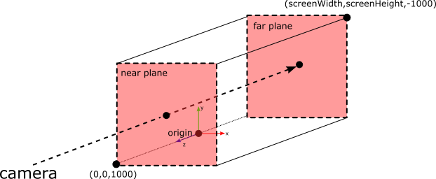
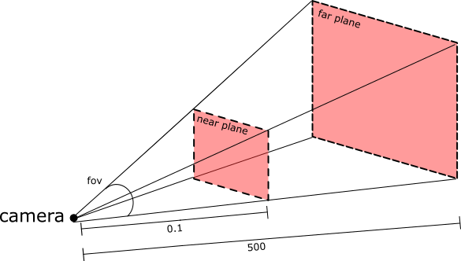

There is no assignment associated with this lab. Today, we will set up our development environment and review C++. We will use the same C++ code framework throughout this course. For some assignments, you will implement core features in the animation library. For other assignments, you will write applications which use the animation library. The framework also includes a simple graphics library for visualizing and controlling your animations.
Some of you may not feel comfortable programming in C++. This is ok! This course is an opportunity to gain experience and this lab is intended to help you gain your footing. Note that you can always look at the existing code in the framework and then modify it to complete your assignments. You can also post questions in Piazza.
The goals of this lab are
The source is available from github.swarthmore.edu. We will use git to keep track of our source code throughout the semester.
You will need a Swarthmore git account for submitting assignments.
> mkdir cs56 > cd cs56 > git clone git@github.swarthmore.edu:cs56-f19/AnimationToolkit-YOURUSERNAME.git AnimationToolkit
For those of you without an account yet, you can download the repository from here. You can still use git locally to keep track of your changes. To submit, we will set the url to the remote repository manually (The professor will send you instructions once your account is setup).
> mkdir cs56 > cd cs56 > unzip AnimationToolkit-master.zip > cd AnimationToolkit-master > git init > git add . > git commit -m "assignment framework"
We will use the same framework for every assignment. Each week, you will implement additional features inside this framework.
Let's start by taking a look at the repository. It contains the following directories
We use cmake because it can support multiple platforms (such as UNIX and Windows) with a single build configuration. For example, cmake can generate Makefiles for UNIX and .vcproj files for Windows. Cmake stores its build settings in CMakeLists.txt files in each directory.
Because cmake generates a lot of temporary files, we use an out of source build to keep our repository clean.
In other words, we will create a separate directory named /build to compile and link.
> cd AnimationToolkit > mkdir build > cd build > cmake .. > make
NOTE: We do not want to check in temporary files to git!!! We can tell git to ignore unwanted files by adding them to .gitignore. I've added build* to this file, so your temporary files are not checked into git.
After this step, you should have executables installed into a new directory called /bin. To test, let's make sure the default viewers work. These are implemented in assignments/viewer2d and assignments/viewer3d. After building, you can run them from the /build directory. Let's start with the default 3D scene:
> ../bin/viewer3d
You should see a grid with a grey background. Dragging with the left mouse
will rotate (try it!) around the world origin. Middle mouse button will zoom.
Right mouse button will pan. Pressing 'Escape' or closing the window will
quit the application.
Now try running viewer2d.
> ../bin/viewer2dOh no, just a blank screen!! Not to worry. The world is empty. We will add some objects to it soon.
To start, let's look at the implementation of viewer2d in assignments/viewer2d/basicMain.cpp
#include "AFramework.h"
int main(int argc, char** argv)
{
AFramework viewer(AFramework::Orthographic);
viewer.init(argc, argv);
viewer.run();
return 0;
}
This code creates a window capable of receiving user input and drawing graphics. The code for viewer3d is very similar. Each creates an instance of AFramework and then calls init() and run(). The run() function does not return until either 'Escape' is pressed or the window is closed. AFramework::run() implements our game loop, which will invoke callbacks for user events, update, and draw.
AFramework supports two types of scenes:
In both, we use the term camera to refer to the location and direction in the world that we can see objects. Moving the camera allows us to see different parts of the world. The parameters of the camera control how much of the world we can see (sometimes called a view volume). Only objects in front of the camera can be seen.
By the default, the 2D scenes in this course do not allow you to move the camera. In other words, only objects that have (X,Y) coordinates between (0,0) and (screen width, screen height) can be seen.
Orthographic

Look at the code in assignments/a0-start/2d/greenSphere2d.cpp
Let's extend the default 2D scene to draw a green sphere in the center of our screen. Because the bottom corner is the origin (e.g. has coordinate (0,0,0)), we will draw the sphere at coordinate (screenWidth/2, screenHeight/2,0). Note that although we will draw a sphere, it will look like a circle in our 2D view. Also note that although our world looks 2D, it is actually 3D. If we want to draw shapes in front of our sphere, we increase the Z value; to draw behind the sphere, we decrease the Z value.
NOTE: You can set the window size by passing width and height to init()
viewer.init(argc, argv, 600, 400);
Try this! Draw a larger sphere directly behind the green sphere.
Now look at the code in assignments/a0-start/redCube2d.cpp
Now let's draw a cube using the function ADrawCube. This function takes a position like before, but it also takes arguments for setting the orientation and size. Thus, this function can be used to draw rotated cuboids, not just cubes.
Try this! Change the scale of the cube to draw a rectangle.
Perspective

Look at and run the code in assignments/a0-start/3d/greenSphere3d.cpp.
Try this! Draw a second sphere at (5,0,5).Look at the code in assignments/a0-start/3d/redCube3d.cpp
Try this! Draw a yellow cone instead of a cube. Look up the color yellow using an online resource such as this one. Read the header file AGLObjects.h (in libsrc/ui) for a function for drawing a cone.